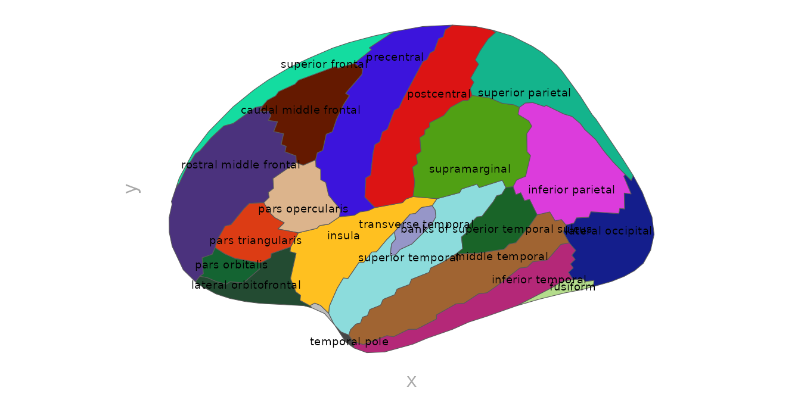
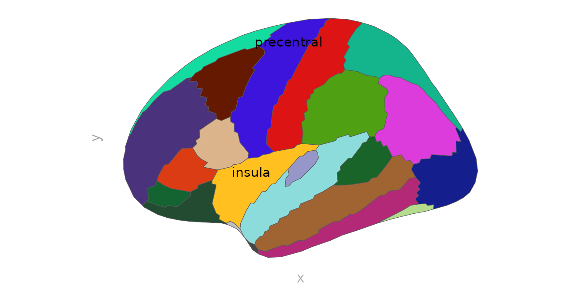
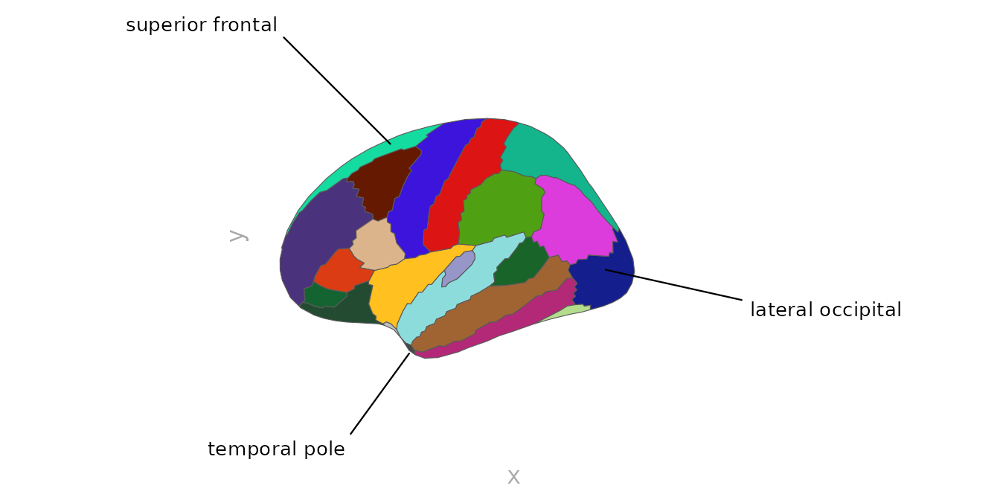
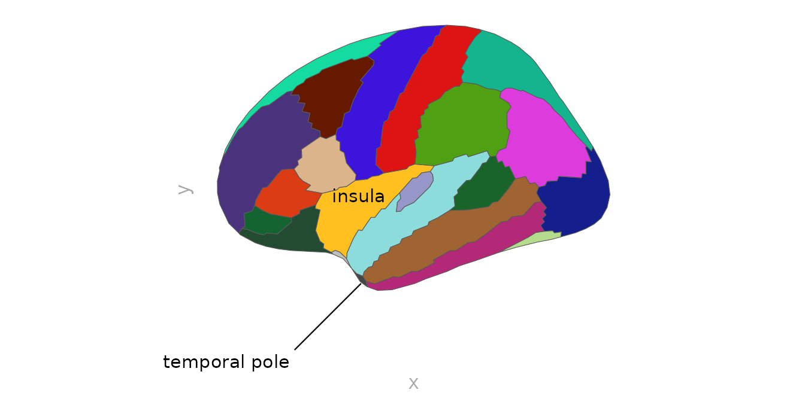
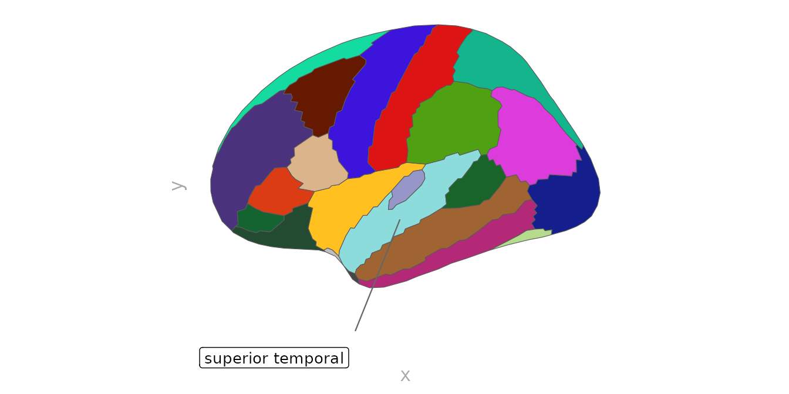
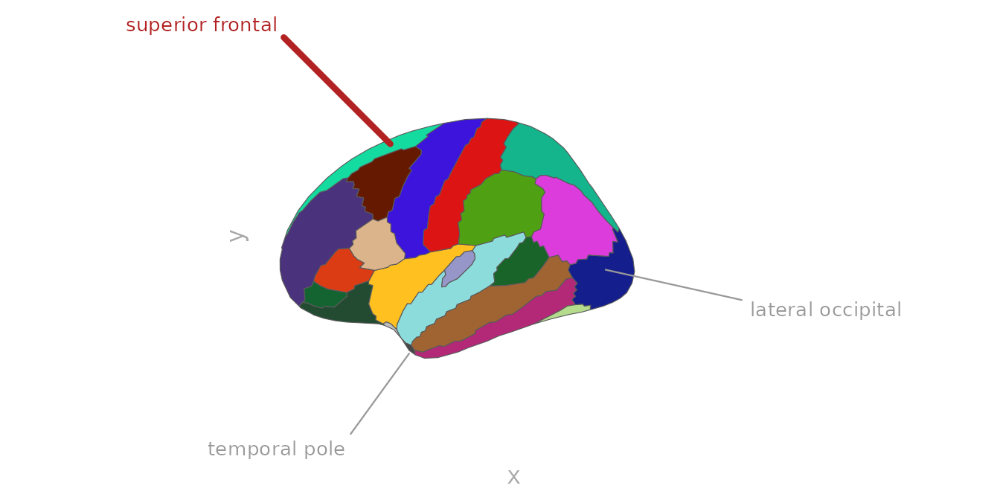
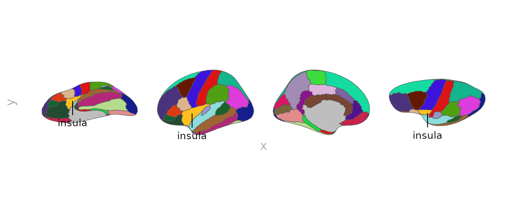

You have the plot. The colours say what they need to say. And then someone in the room asks which blob is the insula.
That is what geom_brain_text() is for. It writes a
region’s name onto the region, and geom_brain_label() puts
the name in a box — the same pair ggplot2 gives you with
geom_text() and geom_label().
The layer already knows which brain it is labelling
Add it after a geom_brain() layer and it takes that
layer’s atlas, layout, hemisphere and view. You do not say any of it
twice, and the labels cannot drift onto a different brain from the one
you drew.
ggplot() +
geom_brain(
atlas = dk(), hemi = "left", view = "lateral", show.legend = FALSE
) +
geom_brain_text(size = 2.5) +
theme_brain2()
Every region named at once. It works, and it shows you why you will usually want fewer.
That is every region the layer drew, and it is honestly a bit of a
mess. Thirty-four names on one view only just fit, and
banks of superior temporal sulcus has to go somewhere. On a
parcellation with hundreds of regions this is not a thing you can do at
all.
So most of the time you want a handful of names, not all of them.
Naming a few regions
Subsetting is data, the same as any other ggplot2 layer.
Hand the label layer a data frame holding the regions you want named,
keyed on label or on region — the same keys
brain_join() uses.
ggplot() +
geom_brain(
atlas = dk(), hemi = "left", view = "lateral", show.legend = FALSE
) +
geom_brain_text(
data = data.frame(label = c("lh_insula", "lh_precentral")),
size = 4
) +
theme_brain2()
Two names instead of thirty-four, chosen by handing the layer less data.
Your own columns come along for the ride, so the text does not have
to be the region’s name. Map label to whatever the data
carries.
findings <- data.frame(
label = c("lh_insula", "lh_precentral"),
note = c("p < .001", "n.s.")
)
ggplot() +
geom_brain(
atlas = dk(), hemi = "left", view = "lateral", show.legend = FALSE
) +
geom_brain_text(data = findings, aes(label = note), size = 4) +
theme_brain2()The text is whatever your data says, not necessarily the anatomy.
Where the name actually lands
Not in the middle of the region, which is the first thing you would
reach for and the thing that quietly breaks. A crescent or horseshoe
region has its centre outside itself, so the name ends up printed on a
neighbour. That is not a rare edge case: it is true of 9% of the shapes
in dk and 41% of those in tracula.
Instead the name goes on the widest run of region that a horizontal line crosses, which is inside the shape by construction. A region drawn in several views gets named in each of them, on its largest piece, and the grey backdrop never gets named because it is not a region.
Moving a name off a small region
Plenty of regions are too small or too narrow to hold their own name,
and that is the normal case rather than the exception.
nudge_x and nudge_y move a label in atlas
units — the same units as the axes, so for a dk view about
215 units across, 40 is a visible shift.
The nice part is that you only say where to move it. The leader line back to the region and the justification both follow from the nudge.
ggplot() +
geom_brain(
atlas = dk(), hemi = "left", view = "lateral", show.legend = FALSE
) +
geom_brain_text(
data = data.frame(
label = c("lh_superiorfrontal", "lh_temporalpole", "lh_lateraloccipital")
),
nudge_x = c(-70, -40, 90),
nudge_y = c(70, -55, -20),
size = 3.5
) +
coord_brain(clip = "off") +
theme_brain2()
Three names nudged clear of the outline. Each turns to face away from its region, and each keeps a line back to it.
Watch out for coord_brain(clip = "off") there. Without
it, a label pushed past the edge of the panel is cut off at the edge,
and you will spend a while wondering why your nudge did nothing.
Each nudge belongs to the row you wrote it next to. Leave one at
0 and that label is drawn plainly on its region with no
line at all, so a single layer can mix the two.
ggplot() +
geom_brain(
atlas = dk(), hemi = "left", view = "lateral", show.legend = FALSE
) +
geom_brain_text(
data = data.frame(label = c("lh_insula", "lh_temporalpole")),
nudge_x = c(0, -40),
nudge_y = c(0, -40),
size = 4
) +
coord_brain(clip = "off") +
theme_brain2()
A label left at zero gets no line. The connector appears because something moved, not because you asked for it.
Tuning the leader line
The gaps at either end are yours to set. box.padding is
the gap next to the text and point.padding the gap next to
the region, both in grid units. min.segment.length is the
length below which no line is drawn at all, which keeps a barely-moved
label from sprouting a useless stub. segment.colour and
segment.linewidth style the line itself. Left alone, a line
takes the colour of its own text, so you rarely have to think about
it.
ggplot() +
geom_brain(
atlas = dk(), hemi = "left", view = "lateral", show.legend = FALSE
) +
geom_brain_label(
data = data.frame(label = "lh_superiortemporal"),
nudge_x = -30,
nudge_y = -75,
box.padding = unit(0.8, "lines"),
point.padding = unit(0.4, "lines"),
segment.colour = "grey40",
size = 3.5
) +
coord_brain(clip = "off") +
theme_brain2()
A boxed label with roomier padding and a grey line, using geom_brain_label().
Those last two are aesthetics rather than arguments, which matters when you want one label to shout and the others to stay quiet. Map them and each connector gets its own treatment.
regions <- data.frame(
label = c("lh_superiorfrontal", "lh_temporalpole", "lh_lateraloccipital"),
accent = c("firebrick", "grey60", "grey60"),
weight = c(1.5, 0.4, 0.4)
)
ggplot() +
geom_brain(
atlas = dk(), hemi = "left", view = "lateral", show.legend = FALSE
) +
geom_brain_text(
data = regions,
aes(
colour = accent,
segment.colour = accent,
segment.linewidth = weight
),
nudge_x = c(-70, -40, 90),
nudge_y = c(70, -55, -20),
size = 3.5
) +
scale_colour_identity() +
coord_brain(clip = "off") +
theme_brain2()
One region accented and the others kept quiet, by mapping the connector’s colour and width.
Neither of them is scaled, so map them to a column that already holds
the values you want drawn. That is why accent above is a
column of colour names rather than a grouping variable, and why the text
colour needs scale_colour_identity() while the connector
does not.
When there is more than one view
With the default layout a region shows up in every view that draws it, and it gets named in each one. You still only write the nudge once. One row of your data is one nudge, however many anchors that row turns into, so the name moves the same way everywhere.
ggplot() +
geom_brain(atlas = dk(), hemi = "left", show.legend = FALSE) +
geom_brain_text(
data = data.frame(label = "lh_insula"),
nudge_y = -45,
size = 3.5
) +
coord_brain(clip = "off") +
theme_brain2()
One written row, one nudge, applied in every view that draws the region.
Where to go next
If what you want is to name the views rather than the regions inside
them — “lateral”, “medial” and so on — that is
annotate_brain(), which
vignette("positioning-views") covers.
And if your labels are fighting each other, the honest answer is usually to name fewer regions rather than to nudge harder. Nudging is good for picking out the handful of regions a figure is actually about. It will not rescue a plot that is trying to name everything at once.